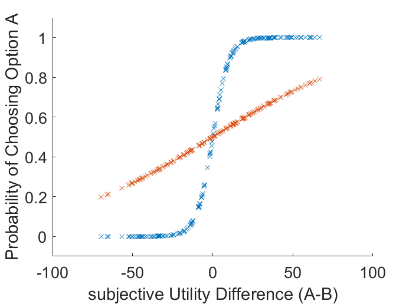
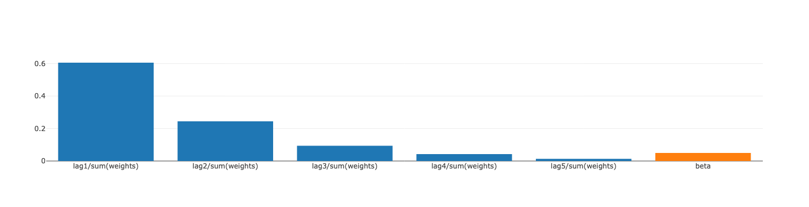

Plan for the next 4 weeks
Week 1
- Python and Colab basics
- Experience the task
- Build a learning model
- Understand its parameters
Week 2 today
- Utility and choice probability
- Model simulations
- Parameter recovery
Week 3
- Checking data quality
- Data analysis
- Model comparison
Week 4
- Statistics
- Write-up planning
What we're aiming to model
How do we learn across time which stimulus is more likely to be rewarded?
How do we decide between different options?
Behrens et al., Nature Neuroscience, 2007
Task recap: the two conditions
Condition 1 — stable
Condition 2 — volatile
Recap of the reinforcement learning (RL) model
On each trial the model compares what happened with what it expected, and moves its expectation a fraction of the way towards the outcome:
$o_t = 1$ if option 1 (green) was rewarded and $0$ if option 2 (orange) was; $\alpha$ is the learning rate, with $0 < \alpha \le 1$.
The learning rate captures the speed of learning
By comparing the speed of learning ($\alpha$) in the volatile and the stable phase, we can test our first hypothesis: how fast we learn and adjust our behaviour depends on how quickly the environment is changing.
Last week you saw what a high and a low $\alpha$ do to the model's estimate. Today we give the model a way of turning that estimate into a choice.
Expanding the model: integrating probabilities with magnitudes
The model tracks a probability. The task also shows points. Something has to put them together into a single number that choices can be based on.
or, less optimally, a weighted sum
Expanding the model: from utility to a choice
A utility for each option is still not a choice. The model needs a decision rule that turns the difference between the two utilities into the probability of picking one of them.
That probability is what we will later compare against what a participant actually did, which is how the model gets fitted at all.
A deterministic rule
If $u_1 > u_2$, always choose option 1.
If $u_1 < u_2$, always choose option 2.
The step sits at the indifference point, $u_1 = u_2$, where the two options are worth exactly the same and the rule has nothing to go on.
- Is a deterministic decision rule the best one in our experiment, and why?
- How would the experiment need to change to make it a bad rule?
A stochastic rule: the softmax
Your turn
Complete the Colab notebook up to the beginning of Section 2, “Creating simulations from the model”.
You will write the softmax yourself, and see what changing $\beta$ does to the model's choices.
What $\beta$ does
$\beta$ is the inverse temperature. The higher it is, the steeper the curve, and the less often the model takes the worse option.
The name is an allusion to thermodynamics: a high temperature, meaning a low $\beta$, means particles moving at random, so behaviour is noisier.

The model's choice probabilities
- Why is the choice probability sometimes very different from the learnt reward probability?
Is the task design appropriate for fitting the model?
The key advantage of simulating data is that we know the ground truth: we chose the parameters, so we can check whether fitting gets them back. With real participants there is nothing to check against, so this has to be done before anyone is tested.
Palminteri et al., TiCS, 2017 · Wilson & Collins, eLife, 2019
How do we check the recovery is working?
- The learning rate sits on the line; the inverse temperature scatters. What does that tell you about which parameter this task can measure?
Overview: the whole pipeline
Session 1. A reinforcement learner, free parameter $\alpha$.
Session 2. Combine magnitude and probability into a utility, then feed the difference in utility into a softmax with free parameter $\beta$.
Session 2. To simulate a choice, compare the choice probability against a random number.
Later, a learner with two learning rates, $\alpha_S$ and $\alpha_V$, one for each block.
Model falsification: stable against volatile
Simulated with one learning rate
Simulated with two
- Why do we need to simulate our hypothesis being both true and false? How could we otherwise misread the real data?
Why might recovery or falsification fail?
- Too few trials — say 20 stable and 20 volatile
- Too little or too much variance in the relevant variables — only stable blocks, or blocks that switch every 5 trials
Either way you find out before collecting a single participant, which is the whole point of doing it first.
Palminteri et al., TiCS, 2017
Simulating our hypothesis as false
Simulate every participant with a single $\alpha$ across both blocks, then fit the two-learning-rate model to the result.
If the fitting invents a difference that was never there, a difference in the real data would mean nothing.

Simulating our hypothesis as true
Now simulate with two learning rates, $\alpha_S$ in the stable block and $\alpha_V$ in the volatile one, and fit the same model.
If the difference does not come back out, the task cannot measure the thing the whole study is about.

Over to you
Complete the remaining exercises in the Colab notebook.
You will run both simulations and see whether the task can tell them apart.
What makes a good fit?
A good fit assigns a high choice probability to the choices the participant actually made.
So for a given $\alpha$ and $\beta$ we can compute, trial by trial, how likely the model thought the observed choice was — and multiply those together across trials.
- Why might multiplying hundreds of probabilities together be a problem on a computer?
The (negative) log likelihood
Taking logs turns the product into a sum, which stays representable. Fitting maximises this, or equivalently minimises its negative.
- Which trials dominate the sum, and why is that a good thing?
Grid search: the likelihood landscape
Why not always use grid search?
- It spends most of its time computing the error in parts of the parameter space that are obviously wrong
- It becomes intractable with many parameters: if two parameters give 100 combinations, four give 10,000
- There are ways to find the maximum without measuring every single point
- Those ways can get stuck in a local maximum, so they are run from several starting points
One intuitive trick: gradient ascent
Start somewhere, work out which way is uphill, take a step, repeat. This is what the notebook's fitting routine does — from ten starting points, keeping whichever run ends highest.
Validating the model: correlating parameters
Each point is one simulated participant: the learning rate they were simulated with against the one that was recovered.
- What did you notice about the outlying points, and what explains them?
Validating the model: falsification
Different learning rates simulated
The same learning rate simulated
Together these say the task can find the effect when it is there, and does not invent it when it is not.
Before next week
- Finish the Session 2 notebook, including the optional regression section if you have time
- Answer the four exercise questions and bring them to session 3
The optional section shows that the model can be written as a logistic regression, with the regression weights standing in for $\alpha$ and $\beta$.
